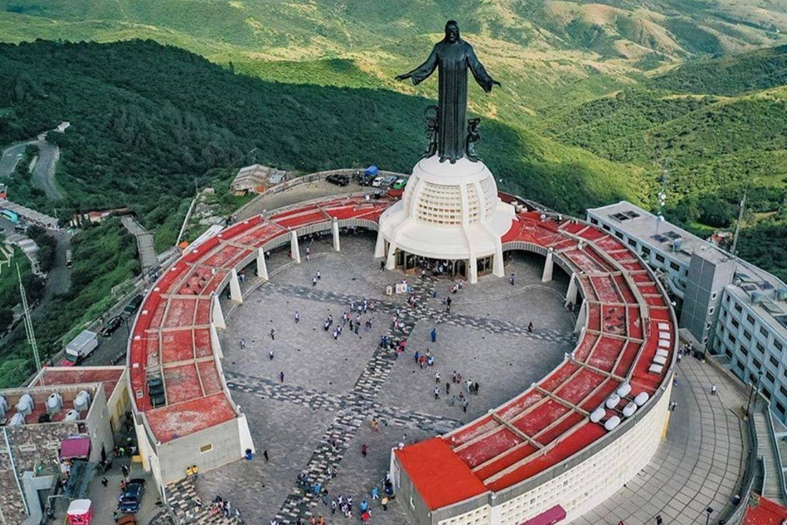

¿Qué es la Peregrinación al Cubilete?

El Cubilete es el Cerro donde se encuentra la monumental estatua de Cristo Rey, en Silao, Guanajuato. Cada año miles de jóvenes católicos de todo el país realizan una marcha nacional hacia su cima, como signo de fe, sacrificio y unidad.
La peregrinación es organizada por Testimonio y Esperanza, y busca reafirmar el reinado de Cristo en la vida de los jóvenes. Se trata de una experiencia de comunidad, esfuerzo y alegría, donde se combinan momentos de oración, canto y convivencia.
Durante la marcha de 16 km se viven momentos de sacrificio, fraternidad y fiesta, recordando el espíritu de los mártires cristeros y renovando el compromiso con los valores cristianos.